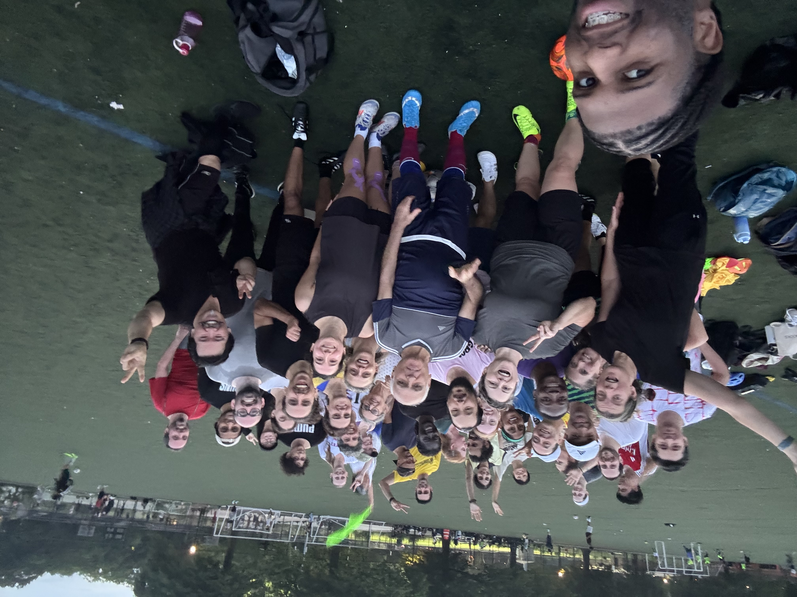

Brooklyn, NY
Prospect
Park
Soccer
Friendly, volunteer-run soccer.
Everyone gets to touch the ball.

Who we are
This is a low-contact, beginner-friendly soccer group. We're a community soccer group playing in or near Prospect Park, Brooklyn, since 2006. We run pickup games and leagues, year-round, indoors and outdoors. Most of us are:
- People learning the game, including complete beginners who've never touched a soccer ball.
- People who've played before but want to avoid injury and aggressive play.
- People who haven't always felt welcome in mainstream sports, including women, trans, and nonbinary players.
Our mission
We welcome all skill levels and genders. Beginners are not an afterthought here, they're who we build the game around. We keep contact low and the pace mellow, so everyone gets touches and room to learn.
Advanced players are welcome too, as long as you're up for a mellow, adjusted game. We range in age from 18 to over 70. What everyone has in common is they're here for a friendly space.
How we play
Most of our games are casual: no tryouts, no goalies, and no need to commit to coming every week. We rotate positions, keep the pace mellow, and pass the ball often so everyone gets a touch.
We also run seasonal leagues with set teams for players who want something a little more structured. Whichever you choose, the same guidelines apply: low contact, low intensity, and room for developing players to learn.
Read our full guidelines →How to play with us
Apply to join our Meetup group. Click on the Join us button on our Meetup page and fill out your profile. We only approve people who give us the basics: a clear photo of just you, a brief intro, and your real first name.
Once you're approved, you'll be able to RSVP for games when spots open each week.
How to join →